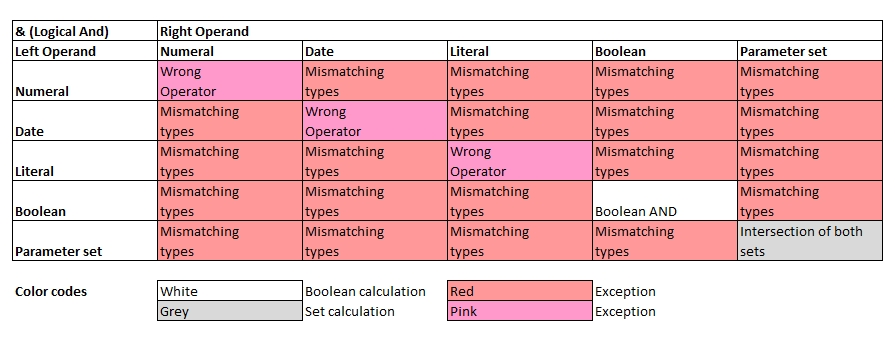

Introduction
Basic rules to logical AND (Symbol: &):
- For boolean values the logical AND operator is applied.
- For parameter sets, the intersection of equal elements will be identified.
- All other data types wll be rejected

echo("On boolean values:");
a[0] = false & false;
a[1] = true & false;
a[2] = true & true;
for all variables( a[], x[] ) echo( x[] );
echo("On parameter sets:");
b[0] = { a, b, c, 1, 2 } & { d, f, 3 }; // Empty set
b[1] = { a, b, c, 1, 2 } & { c, b, 3 }; // {b, c}
b[2] = { a, b, c, 1 ,2 } & { 1, 2, c }; // {c, 1, 2}
b[3] = { a, b, b, c } & { b, a, b, b }; // {a, b, b}
for all variables( b[], x[] ) echo( x[] );On boolean values:
false
false
true
On parameter sets:
{}
{'b','c'}
{'c',1,2}
{'a','b','b'}